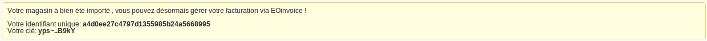
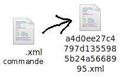

EOinvoice
Web-service - Mode d’emploi
Première utilisation par un magasin:
° Se rendre dans le menu Web-service
° Entrer l’URL du fichier XML de définition du magasin
IL DOIT IMPERATIVEMENT SE NOMMER "store.xml" !
Le fichier XML se présente comme suit:
Au terme de cette procédure le magasin est enregistré en base de données et deux informations sont fournies à l'utilisateur:
° Un identifiant unique (uniqid)
° Une clé de cryptage

Ces informations sont à noter et à conserver !
Dès lors, le magasin peut transférer ses commandes sous forme d'un fichier XML construit de cette manière:
Ce fichier doit être impérativement nommé de la manière suivante:
[uniqid].xml
où [uniqid] doit être remplacé par l'identifiant unique du magasin, fourni à l'étape précédente.

----------------------------------------------------------------
Une fois le fichier correctement nommé, il est nécessaire de le crypter;
La fonction suivante permet d'effectuer ce traitement:
----------------------------------------------------------------
L'argument $key doit être remplacé par la clé fournie lors de l'inscription du magasin.
----------------------------------------------------------------
Dernière étape:
° Se rendre dans le menu Web-service
° Entrer l’URL du fichier XML de définition de la commande
Une facture a été générée !